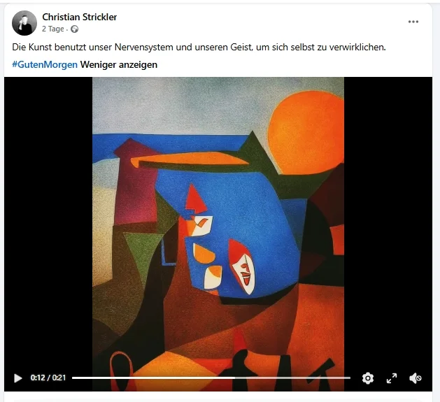

Die Kunst benutzt unser Nervensystem und unseren Geist, um sich selbst zu verwirklichen.
#GutenMorgen
Beleg: das Bildschirmfoto vom 19. Oktober 2026


5699c9002738379ab87cc5c47ce2eb9c6f52be8f4b019d606ffb055ca3b1d373Schlagworte
Wer spricht
Christian Strickler
In der Nähe
Zitieren
Christian Strickler (17. Oktober 2026): «Die Kunst benutzt unser Nervensystem und unseren Geist, um sich selbst zu verwirklichen. #GutenMorgen» Beitrag auf Facebook. Gesichert am 19. Oktober 2026, https://ornament.cloud/social-media/2-beitrag-zu-kunst-nervensystem-und-geist/